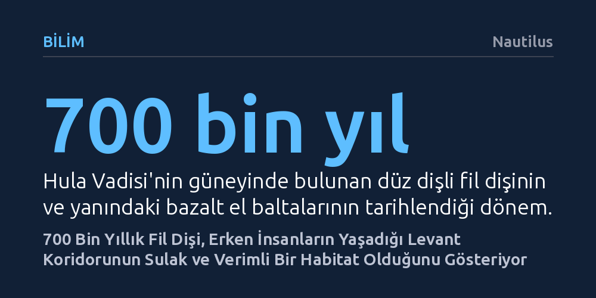

BILIM · Nautilus · 2026-10-10
Levant bölgesinde bulunan 700 bin yıllık bir fil dişi üzerindeki analizler, dönemin coğrafyasının sanılanın aksine zengin su kaynakları ve ormanlarla kaplı olduğunu ortaya koydu. Bu bulgu, erken insan türlerinin Afrika’dan Avrasya’ya göç ederken bu sulak ve verimli vahada uzun süre barındığını kanıtlıyor.
İnsan atalarının Afrika dışına göçünü çetin bir çölü aşma mücadelesi olarak değil, sulak alanlar ve zengin besin kaynaklarıyla bezeli elverişli koridorları izleyen doğal bir yerleşim süreci olarak değerlendirmemizi sağlar.

Afrika ile Avrasya kıtaları arasında doğal bir köprü oluşturan Levant bölgesi, günümüzden yaklaşık bir milyon yıl önce insan evriminin en işlek göç koridorlarından biriydi. Modern insanlarla Neandertallerin bu topraklarda bir araya gelmesinden çok daha önce, muhtemelen Homo erectus ve Homo heidelbergensis gibi öncül insan türleri bölgeye yerleşti ve bu dar geçidi düzenli bir rota olarak kullandı. Ancak bu kadim insanların nasıl bir iklimde yaşadığı ve hangi çevre koşullarıyla karşılaştığı uzun süredir aydınlatılamamıştı.
İsrail'deki Hula Vadisi'nin hemen güneyinde yer alan 'Yakup'un Kızları Köprüsü' mevkiinde yürütülen kazılar, bu döneme dair ezberleri bozan kritik ipuçları sağladı. Arkeologlar, aynı tortul tabaka içinde yaklaşık 700 bin yıl öncesine tarihlenen bazalt el baltaları, savunma dişi parçaları ve olağanüstü derecede iyi korunmuş bir fil dişi buldu. Erken insanlara ait taş aletlerin devasa bir fil kalıntısıyla yan yana bulunması, iki türün aynı coğrafyayı ve habitatı paylaştığını kanıtlıyor.
Hayfa Üniversitesi liderliğindeki bir araştırma grubu, bulunan dişi yüksek çözünürlüklü bilgisayarlı tomografi (BT) taramaları, üç boyutlu rekonstrüksiyon ve izotop analizleri gibi ileri tekniklerle mercek altına aldı. İncelemeler sonucunda dişin, Pleistosen dönemde yaşamış ve yeryüzündeki en cüsseli memelilerden biri olan düz dişli fil Palaeoloxodon antiquus türüne ait olduğu tespit edildi. Günümüz fillerinden çok daha heybetli olan bu canlının dişi, ait olduğu dönemin Levant ekolojisini günümüze taşıyan eksiksiz bir biyoarşiv niteliği taşıyordu.
Diş minesinde hapsolmuş karbon izotopları, bu dev filin su kaynakları bakımından son derece bereketli bir ekosistemde yaşadığını ortaya koydu. Diş yüzeyindeki mikroskobik aşınma desenleri incelendiğinde ise hayvanın nehir kıyıları ve sık ormanlık alanlardaki taze bitki örtüsüyle beslendiği anlaşıldı. Bu verileri destekler biçimde, dişin çevresindeki çökeltilerde saptanan fosil polenlerin de su bitkilerine, sazlıklara ve söğüt ağaçlarına ait olduğu belirlendi.
Elde edilen jeokimyasal ve botanik bulgular birleştirildiğinde, 700 bin yıl önceki Levant koridoruna dair geleneksel algı kökten değişiyor. Bölge, kuru ve zorlu bir göç yolu olmanın çok ötesinde, gür ormanların ve geniş bataklıkların iç içe geçtiği adeta kusursuz bir tatlı su vahası görünümündeydi. Bu elverişli çevre, hem bölgedeki megafauna hem de dönemin erken homininleri için zengin besin kaynakları ve korunaklı yaşam alanları sağlıyordu.
Aynı alanda bırakılan bazalt el baltaları, erken insanların sadece bu bereketli havzada konaklamakla kalmayıp su kenarlarına gelen dev hayvanları avlamış ya da leşlerinden yararlanmış olabileceğini düşündürüyor. Dolayısıyla insan atalarının Afrika'dan Avrasya'ya geçişi, kurak çölleri aşma mücadelesinden ziyade, birbirine bağlı sulak ve üretken ekosistemleri takip eden konforlu bir yayılım süreci olarak yeniden tanımlanıyor.